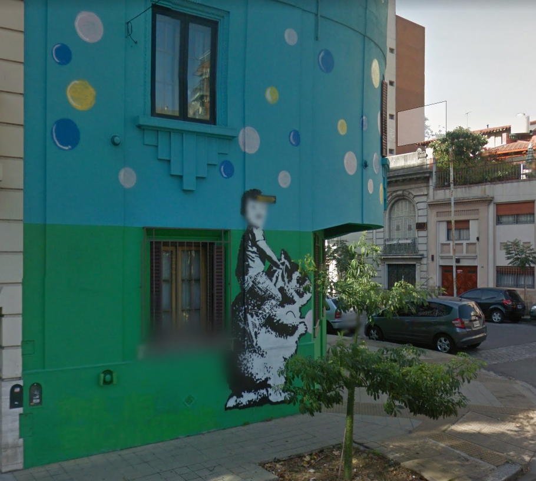

<!doctype html>

<html lang="en">
<head>
  <meta charset="utf-8">

  <title>Cartograf</title>
  <meta name="Cartografia de los grafitis en Buenos Aires" content="Cartograf">
  <meta name="author" content="SitePoint">
  <link rel="stylesheet" href="https://unpkg.com/leaflet@1.0.3/dist/leaflet.css" />
  <link rel="stylesheet" href="css/styles.css?v=1.0">

  <!--[if lt IE 9]>
    <script src="https://cdnjs.cloudflare.com/ajax/libs/html5shiv/3.7.3/html5shiv.js"></script>
  <![endif]-->
</head>

<body>
    <script src="https://unpkg.com/leaflet@1.1.0/dist/leaflet.js"
    integrity="sha512-mNqn2Wg7tSToJhvHcqfzLMU6J4mkOImSPTxVZAdo+lcPlk+GhZmYgACEe0x35K7YzW1zJ7XyJV/TT1MrdXvMcA=="
    crossorigin=""></script>
    <script src="js/scripts.js"></script>
    <div id="mapContainer">
    	<script>
            //instanciate leaflet map
            var map = L.map('mapContainer').setView([-34.602889, -58.442420], 12);
            var layer =  L.tileLayer('https://cartodb-basemaps-{s}.global.ssl.fastly.net/light_all/{z}/{x}/{y}.png', {
                attribution: '&copy; <a href="http://www.openstreetmap.org/copyright">OpenStreetMap</a>, &copy;<a href="https://carto.com/attribution">CARTO</a>'
            }).addTo(map);


            var marker1 = L.marker([-34.609688, -58.434294]).addTo(map);
			marker1.bindPopup("<b>INTERVENCION CALLEJERA</b> <br> <a href='img/1.png' target='_blank'> </a>").openPopup();
            var marker2 = L.marker([-34.636998, -58.410914]).addTo(map);

        </script>
    </div>
</body>
</html>